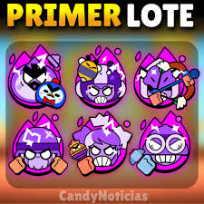

Cambios de balance
Con la nueva actualizacion llegaron los nevos cambios de balance y con ello varios brawlers han escalado en el
meta actal para el competitivo y en general para cualqier modo de juego. A continacion se mostrara la neva Tier list
Marzo 2025, pero antes veamos algnos nevos cambios de balance que fueron añadidos recientemente.
HIPERCARGAS
En esta actualización, 12 brawlers recibirán hipercargas. Se lanzarán en 2 tandas, y cada una será de 6 hipercargas.
PRIMERA TANDA
- CARL: TORBELLINO ARDIENTE. Carl deja una estela de rocas ardientes en el suelo que infligen daño a los enemigos que las tocan.
- MANDY: AZÚCAR PARA TODOS. Mandy dispara su súper en tres direcciones distintas.
- HANK: PESCADITOS PRECISOS. Hank ataca con torpedos mejorados que se dirigen directamente a su objetivo.
- BO: TRAMPA PARA OSOS. El súper de Bo coloca 5 minas en lugar de 3. Estas minas no reemplazan a las que ya hubiera colocado antes con su súper, así que es posible tener más de 3 minas a la vez en el mapa.
- BEA: LARGA VIDA A LA REINA. Los proyectiles del súper de Bea se dividen en dos al alcanzar su distancia máxima (y al impactar), lo que aumenta aún más la distancia y la amplitud de su súper.
- SEÑOR P: SUPERBOTONES EN ACCIÓN. La base del señor P ahora genera botones mucho más poderosos. Puede haber dos de estos "superbotones" activos al mismo tiempo.

De momento estas son todas la nevas hipercargas añadids a brawl stars en esta actalizacion.
Ahora pasemos con los bff y debff que algnos brawlers recibieron en esta ltima actualizacion
MEJORAS
OLLIE
El daño de su ataque principal pasa de 850 a 1000.
Súper: Ollie ya no se silencia a sí mismo, pero usa un 50 % de su munición máxima.
MEEPLE
La velocidad de recarga del ataque principal pasa de 2 a 1.9.
RUFFS
Escudo y daño de la hipercarga: pasan de un 10 % a un 15 %.
DEBILITACIONES
GUS
El daño de su ataque principal pasa de 1120 a 1080.
El daño del gadget Explosión espiritual pasa de 2240 a 2160.
STU
La cantidad de salud máxima que regenera Chute de adrenalina pasa de un 10 % a un 8 %.
PENNY
El ratio de carga de la hipercarga pasa de 35 a 30.
JUJU
El ratio de carga del súper pasa de 90 a 72. (Pasa a necesitar 6 golpes sobre tierra en lugar de 5 y 7 golpes sobre hierba y agua en lugar de 6.)
MAX
El ratio de carga de la hipercarga pasa de 40 a 35.
RICO
El ratio de carga de la hipercarga pasa de 40 a 35.
LOU
El ratio de carga de la hipercarga pasa de 40 a 30.
OTROS CAMBIOS
KENJI
Ahora muestra con precisión el lugar al que va a volver tras usar el súper.
Tier List
!Sabesmos que lo has estado esperando¡ Por eso acontinacion te dejamos la tier list perfecta para el competitivo y calquier modo de juego
esperamos que la disfrutes, la sepas usar bien, y te sirva para esta nueva y actualizada temporada del competitivo.

Contacto: Telefono 1: 833-153-85-35
Telefono 2: 833-539-58-76
Correo 1: leonardoramiere@gmail.com
Correo 2: niggabro@gmail.com